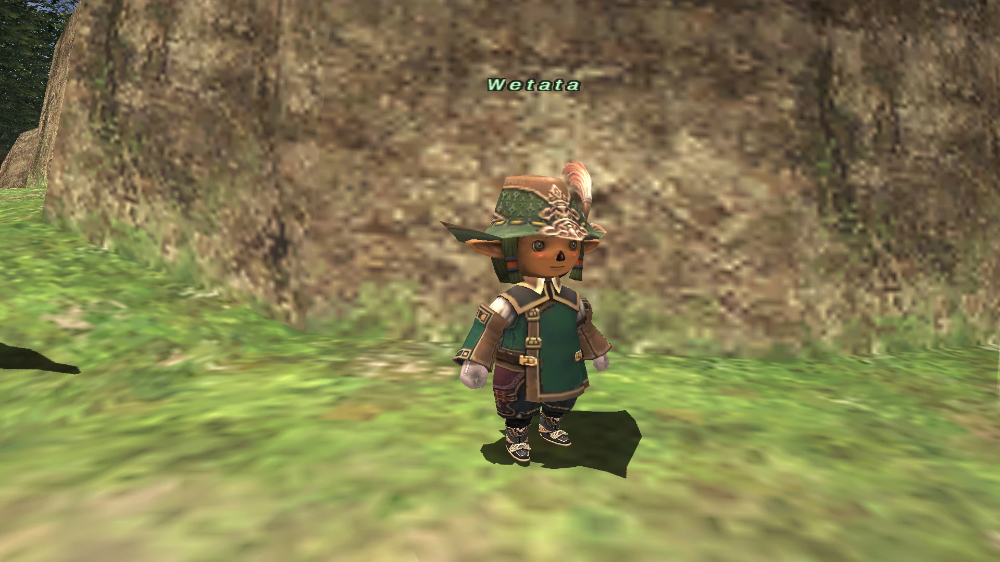

NPCs › WetataWetataFrom Zenith XI WikiTrust registration and Cipher exchange.Wetata in Windurst Woods. · Image sourceNameWetataLocationWindurst Woods (G-10)ContentsLocationWhat to doTrust permits and CiphersLocationWindurst Woods (G-10). Trust registration and Cipher exchange.What to doService and walkthroughTrust permits and CiphersStarting-city Trust quests · RoE Cipher walkthrough